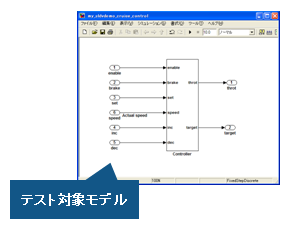
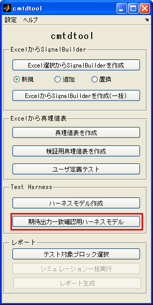
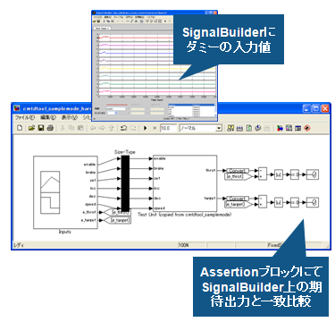

期待出力との一致確認モデルの自動作成
- MATLAB R2009b以降対応
- Simulink Veirification and ValidationおよびSimulink Design Verifierが必要(R2009b, R2010a)
- Simulink Veirification and Validationが必要 (R2010b以降)
Contents
概要
(1) 対象モデルを選択する。

(2) 期待出力一致確認用ハーネスモデル をクリックする。

(3) ハーネスモデルが自動生成され、期待値とモデル出力の一致比較が行われる

デモ実行方法
- cmtdtool\demoフォルダ内 cmtdtool_samplemode.mdl を開く
- cmtdtool 上で「期待出力一致確認用ハーネスモデル」ボタンをクリックする
- 新規モデル上にcmtdtool_samplemode.mdl のテストハーネスモデルが作成されていることを確認する。
- コマンドウィンドウから以下を実行することでGUIと同様な操作が実行可能であることを確認する
open_system('cmtdtool_sample') makeharness_compareresults('cmtdtool_sample');